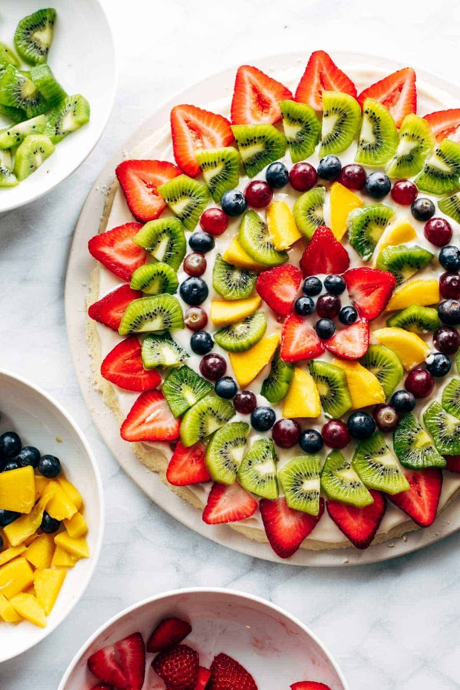

VEGETABLE SALAD

Benefits of Vegetable Salad
Vegetable Salad greens contain Vitamin A, Vitamin C, beta-carotene, calcium, folate, fiber, and phytonutrients
Steps to make Vegetable Salad
- 1 banana (peeled and cut into bite-size pieces
- 1 apple (peeled & cut into bite-size pieces
- 1 orange pulp (peel and de-pith the orange
- ½ cup red and green grapes (slit into 2-4 pieces)
- 5 strawberries (cut into bite size pieces)
- Cover and chill for at least 30 minutes. Toss again just before serving.